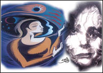

|
|
||||
|
This article is forwarded in Mukto-mona by Rahul Gupta. Originally published at: http://www.dawn.com/weekly/dmag/dmag6.htm
|
||||
A long wait to misery
By M.Y. Khan
 Her's was the typical story of an educated girl. She was unmarried and for years had been a burden on her widowed mother. Finally, desperation came into play and her mother placed an ad in the newspapers for a perfect match. However, the reply that came, was far from what the girl's mother expected. The only man who answered the ad was from a shanty town, had yellow teeth, white beard and a green muffler hanging around his invisible neck. He was also fat by any standard. The girl hated him from the word go, but knew her mother would beg her not to reject him. His best trait was that he was a good salesman and had money. She nodded her head that day, and cried all night.
Ever since her father died many years ago, her mother had taken care of her and her siblings. She was a burden on the family because of her education that had failed to provide her a good job. On that particular day, her miserable life had provided her a horrible husband. And she had to say yes.
There are hundreds of thousands of such 'yes' girls all across Pakistan. And elderly men who are taking full advantage of this situation. They come forward, offering help to such girls, some as old as their grand fathers. True, some girls do raise alarm but nobody listens. They resign to their fate, willingly and happily. This home has two to four girls of marriageable age, who are waiting for proposals to come around.
Some girls deliberately fail in their examinations as colleges and schools are their only refuge. They suffer no stares there for not being married. Some genuinely feel they are taken as a burden. They seldom show happiness and mostly eat less at the dinning table.
Some take courses in beauty parlours, computer centres while others teach in schools. Some of these unfortunate girls tend to indulge in mock love affairs. Married neighbours and well-off relatives also take advantage and make fool of them. These girls are mostly tired of going into the drawing room (whatever the size) full of those males and females who blatantly examine them from top to bottom. And after eating and drinking, they promise to reply after talking to some uncle in Dubai or elsewhere. They never respond.
Every one of these visits, usually cost more than a thousand rupees to families with meagre resources. They have to oblige because they are larkiwalas (girl's family)!
Almost every home has a girl and they are toyed around with by almost everyone. Even cousins play villains. They hoodwink poor innocent cousins, have a good time with them and finally marry girls from rich families who can support them financially. With the spread of education, now girls usually keep such unscrupulous guys at bay, but some do fall prey and later repent.
Some loving uncles and aunts also play havoc with such girls. In one case, a religious man married his son to his niece and took her to New York, the ultimate dream of scores of Pakistani girls. When she reached there it was a nightmare. The poor girl had to cook meal for more than forty people since his uncle loves to have paying guests from his native town. She would work ten to fifteen hours and was not allowed to see her husband even once a week. She never informed her family in Pakistan. But when one night she was kicked out of the house, during freezing December rains, she made a collect call to a relative who rescued her. She filed for divorce and won freedom. However that treacherous uncle flew once again to Pakistan and married another girl to his son and went back. How many families suffer due to such people?
By tradition Pakistanis tend to hide unpleasant happenings in their families. But this must stop. There is no justification in exploiting a girl's parents. Will this ever end? Perhaps not, in the near future. But we've at least got to try.
This has been going on for generations. My own father, who was not a bad man, but seldom he was nice to my mother. I mostly found tears in her eyes. One day I asked her, "Did you like this man when you married him?" She looked around and replied in her meek voice, "No, I was his second wife, he was a widower." Then why had grandfather agreed to her marriage? "He had no option and I was not allowed to even say yes." My mother died of cancer after giving birth to fifteen children. He was our father who was never liked by my mother. This is life.
It is not easy to live as a girl or a woman. A top lady political activist, who lost her young husband after hardly ten years of love marriage, suddenly married a man of her father's age.
"Frankly I was tired of proposals offered day and night. One day I called it a day and asked this father of six whether he could take care of my three children as well. He said yes and that's all."
She is happy, secure and safe. However, it is not that easy for all. A young girl who lost her bank officer husband in a robbery last winter was offered casual job at the bank. She joined and was very comfortable with the environment. Especially the chief of the bank who was like a grandfather to her. She loved to work with that angel. But one day that angel offered her to become his third wife. She promised to reply tomorrow. Tomorrow never came. She left the job. Now she has to live again with seven brothers and sisters and tears of her mother. Her father was a quiet man. He has become quieter and quieter. This is life in Pakistan, a front-line state against international terrorism. Internally it is terror everywhere.
This article is forwarded in Mukto-mona by Rahul Gupta. Originally published at: http://www.dawn.com/weekly/dmag/dmag6.htm
[Mukto-mona] [Articles] [Recent Debate] [Special Event ] [Moderators] [Forum]